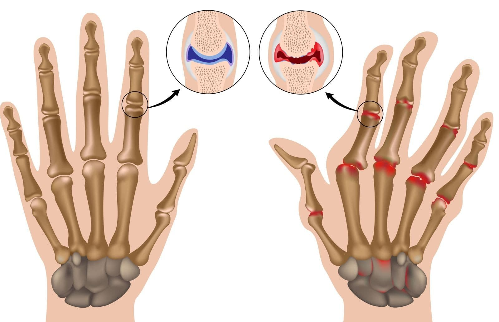

Photo: OCCIDENTAUX NOUVELLES
Photo: OCCIDENTAUX NOUVELLES
Au cours des 20 dernières années, le nombre de personnes souffrant de maladies articulaires a presque doublé et l'âge moyen des personnes atteintes est tombé à 24 ans. La faute à tout le mode de vie sédentaire des gens modernes, le tabagisme, un niveau élevé de stress et une mauvaise alimentation. L'arthrite est une maladie grave qui, en quelques années, peut rendre une personne handicapée. Comment se protéger d'un fauteuil roulant et guérir les maladies articulaires pour toujours?
Symptômes de l'arthrite
l'Arthrite a une variété de symptômes:
- Crunch dans les articulations;
- Gravité des mouvements;
- Douleur dans l’OS;
- Tension dans le dos;
- Douleur au changement de temps;
- Sensation de raideur;
- Faiblesse générale du corps;
- Gonflement ou augmentation de la taille de l'articulation.
Arthrite: qu'est-ce que c'est?
Le mécanisme de l'apparition de l'arthrite est relativement simple et a longtemps été étudié. La maladie, souvent, se produit lorsque des agents pathogènes pénètrent dans le corps. Dans ce cas, une réaction immunitaire naturelle est déclenchée, ce qui supprime l'infection. En raison de dysfonctionnements du système de défense, l'immunité détruit à la fois les cellules étrangères et le propre tissu cartilagineux.
L'innovation aidera-t-elle?
En mars 2019, des scientifiques de l'Université japonaise d'Osaka ont publié une déclaration sur une nouvelle méthode de traitement de l'arthrite – l'immunothérapie. L'immunoterpie aide le corps à combattre uniquement l'infection sans détruire ses propres articulations. Malheureusement, il ne convient pas à tout le monde. Son coût est très élevé et ne donne pas toujours le résultat. L'immunothérapie présente un autre inconvénient majeur: si elle ne vous convient pas, elle peut provoquer une destruction complète du tissu articulaire. Beaucoup de personnes atteintes d'arthrose sont devenues handicapées à cause de l'immunothérapie. Leur corps ne l'a pas prise.

Une alternative à l'immunothérapie
La douleur ne peut pas être ignorée: l'arthrite ne disparaît pas d'elle-même. Au fil du temps, la maladie progresse et sera beaucoup plus difficile à guérir qu'au début. En outre, il est impossible de supporter cette douleur douloureuse, cela vous empêchera de profiter de la vie, de travailler et même de dormir.
La douleur ne peut pas être ignorée: l'arthrite ne disparaît pas d'elle-même. Au fil du temps, la maladie progresse et sera beaucoup plus difficile à guérir qu'au début. En outre, il est impossible de supporter cette douleur douloureuse, cela vous empêchera de profiter de la vie, de travailler et même de dormir.
Dans le cadre du projet “Une Vie Saine”, l'Organisation mondiale de la Santé, en collaboration avec des médecins japonais, a mis au point un médicament innovant contre l'arthrite. Cet outil bloque la réaction agressive du corps aux articulations, anesthésie et ne nuit pas à la santé.
Il y a quelques mois, la nouveauté est apparue sur les tablettes des pharmacies, mais d'autres fabricants ont commencé à la remplacer: cet outil est moins cher et plus efficace et peut réduire les ventes d'autres médicaments pour les articulations.
Le projet de libération du médicament a été redémarré à nouveau, la composition a été complétée et le médicament a été décidé de le mettre en œuvre via Internet afin que les gens ne défendent plus les files d'attente dans les pharmacies.

Traitement de l'arthrite sans conséquences
Actuellement, les de – sont le seul produit qui peut arrêter les processus inflammatoires dans les articulations et soulager la douleur sans effets secondaires.
L'huile de cannabis a un effet curatif sur les articulations, soulage l'enflure et la douleur. Il fournit également de l'énergie au corps et aide à renforcer le tissu osseux. Après la première prise de gélule, vous vous sentirez immédiatement mieux, les symptômes de l'arthrite commenceront progressivement à disparaître.
Pour obtenir le meilleur effet, il est préférable de prendre des capsules de tous les jours et de faire des exercices légers. Vous pouvez marcher autant que vous le souhaitez dans l'air frais, nager, faire de l'aérobic ou de la danse et tout ce que vous voulez. Les scientifiques disent que cette remède est capable de devenir le principal traitement de l'arthrite.
Aujourd'hui, les capsules de sont le meilleur traitement de l'arthrite. est fabriqué uniquement au Japon, mais les médecins prévoient d'établir des ventes dans le monde entier. Jusqu'à ce que cela se produise, les experts vendent la remède deux fois moins cher que prévu. Dès qu'ils pourront vendre la remède dans le monde entier, ils augmenteront le prix. Les médecins ne fourniront pas d'approvisionnement mondial, s'ils continuent à vendre si bon marché, ils vont tout simplement faire faillite. Il reste très peu de temps pour avoir le temps d'acheter à un prix record.


Commentaires:
Récemment commandé et littéralement quelques jours plus tard, le colis était chez moi! Si rapide même pas livrer express mail, merci!
Êtes-vous sérieux? Oint remède et tout, il n'y aura pas de problèmes?
Monique, le fait est que sauve même les cas les plus désespérés. La remède est frottée jusqu'à pénétration complète, elle anesthésie et guérit bien. C'est beaucoup mieux qu'une tonne de pilules, de injections et de compte-gouttes. Essayez-le, devrait aider, c'est moi qui vous dis en tant que spécialiste!
J'ai aimé . Peut-être, je commanderai encore!
Je l'ai pris pour maman. Elle se levait même mal jusqu'à : ses articulations étaient enflées et la peau à côté d'elles était chaude. Comme elle souffrait! Dès qu'ils ont commencé à utiliser , ma mère a généralement oublié quel âge elle avait. Les jambes ne font pas mal, les mains vont bien, s'occupe de son jardin préféré à la maison et de ses petits-enfants! Mais elle est déjà 80!
Article utile!
Je me suis levée après la première année de ! Tous ceux qui s'inquiètent que cette remède est un non - sens complet, alors vous perdez beaucoup, je vais vous dire!
Intéressant, vous pouvez essayer
Vous ne croyez pas tous, et j'ai déjà eu un enfant! Je m'inquiétais que les articulations douloureuses compliqueraient ma grossesse et n'osaient donc pas le bébé! J'ai tout essayé: et les agents hormonaux, et ces injections sont malheureuses, et combien de pilules j'ai bu, rien n'a aidé! Et puis un ami a conseillé la remède et tout, littéralement pour un cours, je me suis senti mieux et le mois prochain, nous avons déjà commencé à attendre la reconstitution)) Voici un peu plus de repos et pour la seconde, nous irons jusqu'à ce que la santé le permet!
Oui, les enfants sont le bonheur, et les petits - enfants sont le double du bonheur! Maintenant, mes enfants laissent leurs petits-enfants avec moi plus longtemps, et je suis heureux, après , je me sens jeune, comme si je ne suis pas leur grand-mère, mais leur mère!!
Je vais essayer de prendre pour ma mère, j'espère que cela aide
Je suis heureux d'avoir commencé à vivre sans douleur! Merci! Je prévois d'aller skier avec mes filles en hiver, j'aurais même eu peur de penser à l'effort physique, et c'est tellement chanceux avec